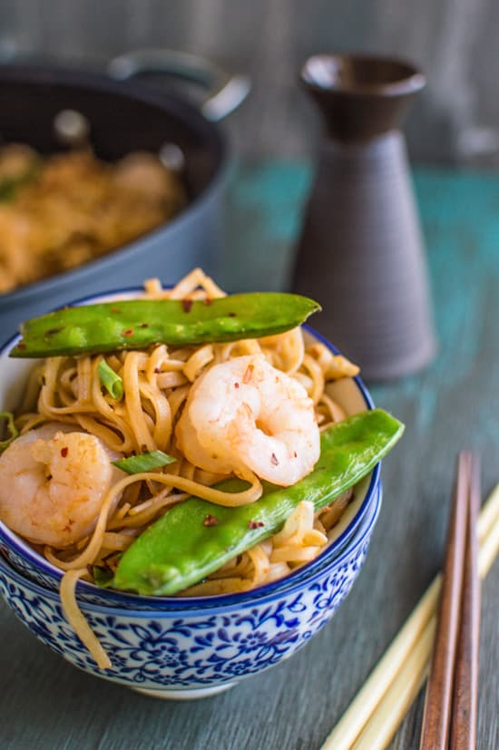

Rice Noodles With Shrimp

Noodles are one of my go to dishes when I need a quick hot meal. Toss in some vegetables and a bit of shrimp, and you’ll have a mouth-watering meal in 30 minutes or less! Disclosure: I received an OXO Non-Stick...
INGREDIENTS
- 8 ounces (225g) dry thin rice noodles
- 2 TBS olive oil
- 1 pound (450g) shrimp, shelled and deveined
- 1/2 small yellow onion, sliced
- 6 ounces (170g) snow peas
- 1 1/2 cups (125g) mung bean sprouts
- 1 TBS hoisin sauce
- 1 TBS chili garlic sauce
- 1 TBS low-sodium soy sauce
- 1 green onion, sliced
- 1/2 tsp garlic powder
- 1 tsp red pepper flakes (optional)
INSTRUCTIONS
- Soak the noodles in boiling hot water for 5 to 10 minutes.
- Heat a tablespoon of olive oil in a sauté pan over medium-high heat. Add the shrimp and let it cook for 5 to 7 minutes, or until the shrimp curls and turns orange. Pour the cooked shrimp on a plate, and wipe the pan down with a towel.
- Heat another tablespoon of olive oil in the pan. Add the onions. When they start to turn translucent, add the snow peas. Cover the pan with a lid for 2 to 3 minutes. If it looks like the pan is very dry, add a few tablespoons of water. Uncover the pan and add the mung beans sprouts and stir for another minute or two.
- Add the noodles, sauces, green onion, and garlic powder. Stir everything for another two minutes. Mix in the shrimp and red pepper flakes. Serve immediately.
Back on top
Back Home